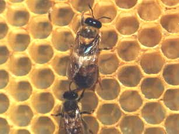

Il fuco ha la funzione di fecondare l'ape regina. Nel periodo primaverile volano a centinaia aspettando che le regine effettuino i voli nuziali per accoppiarsi. E' facilmente riconoscibile per le maggiori dimensioni. Non ha il pungiglione. Muore durante l'accoppiamento perché per estroflettere l'endofallo effettua una contrazione muscolare che lo paralizza.